Student Centric Health
Problem space: We found that GT students are facing challenges with the healthcare system available to them.
This is a significant issue as we found varied problems in the healthcare system: students are delaying healthcare treatment,
having difficulties scheduling an appointment, having trouble balancing academics and health, and do not have financial literacy about insurance
and healthcare costs. It is important to have a more efficient healthcare system for students and provide students with an overall better experience
with healthcare.
User Group: GT students who use on-campus and off-campus healthcare services.
Identify
From interview and survey data, we found that the main 3 issues with the healthcare system on campus for GT students are the following:
- Difficulties scheduling appointments that work with a student’s schedule
- Balancing health and academics
- Financial literacy
We came up with the following project goals:
- Create a user-friendly and user-centered mobile application
- Utilizing user research and data throughout the design process
- Developing an efficient system that provides users with a simpler way of managing healthcare information
Design goals:
- Deliver Timely and Personalized Healthcare
- Simplify Access to Healthcare Services
- Financial transparency and trust
Ideate
We first examined existing solutions and their respective pain points, so that we could better understand the areas that need improvement and implement those into our solution.
Below are the existing solutions that are available for students:
- the STAMPS website
- STAMPS is the only on-campus healthcare center option for GT students.
- The ability to schedule an appointment is not user-friendly because the user has to navigate extensively to find the page/link to book an appointment.
- Students and staff are not able to see the wait time or position in the queue so that they can go attend to other things
- Talking to STAMPS employees via phone or in-person
- Students and staff are not provided an email about the appointment that they have
- If the patient is a walk-in, time is wasted in walking to STAMPS and back if no appointment is available
- On the phone, the patient has to wait for the nurse to get on the phone
- No means to know who is next in line or position in queue
- Finding an alternative care center off-campus
- Finding an alternative care center off-campus.
- No means to know who is next in line or position in queue
- Travel time to and from the center
As part of the ideation process, we then came up with three personas to represent different types of users within the Georgia Tech
student body. The personas helped to understand the needs, behaviors and pain points of the target user group, which enabled us to
to be more empathetic and ensure that the final designs would effectively address the various challenges students would face when accessing
healthcare services on and off campus. Below are the 3 personas that we came up with:
- Ana Gonzalez

- Demographics
- 20 years old, female
- 3rd-year computer science major at Georgia Tech
- lives on campus
- from Georgia
- Goals
- Work/School is from 8-6:30 daily, She needs more scheduling availability at varied healthcare centers open after 6 pm.
- Busy weekday schedule, Wants to find healthcare centers open on the weekends.
- Can’t schedule weeks in advance, wants to find appointments for the week she is on and not in a month.
- Pain points
- Websites or patient portals do not show accurate appointment availability therefore needing to call.
- Finds no appointments available for the week.
- Time-consuming to check all commitments and school schedules against the healthcare center availability.
- Liam Peterson
- Demographics
- 19 years Old, male
- 2nd year Mechanical Engineering major
- Out-of-state
- Goals
- Numerous obligations to classes and extracurriculars results in forgetfulness. He needs multiple reminders across different mediums (i.e. text, email, etc.) for upcoming appointments
- He has classes that span all throughout health center hours and does not have time to travel to the office and back in between classes. He needs more virtual appointment options to choose from
- Sometimes struggles with mental health. Needs easy access to mental health professionals and resources that are relevant
- Pain points
- Finds some mental health resources to be unhelpful due to being over-generalized
- Struggles with managing health-related information- often misplaces his appointment summary and test result forms after leaving the office
- Often has to skip a class or meeting in order to go to an appointment
- Sarah Johnson
- Demographics
- 20 years old
- 3rd year Computational Media major
- In-state
- lives on campus
- Goals
- Has a part time job and has started to learn to pay her own bills. She needs to know the estimated cost of the visit
- Budgeting her money, needs to know information on her insurance such as policies, coverage, and services that are covered
- New to finances, Wants to know what the insurance jargon means
- Pain points
- Finds herself always researching about her insurance’s policies and their terms and conditions
- Has to always call her doctor’s office or any healthcare service to get the cost estimate ahead of time or sometimes never gets the estimate
- Spends a lot of time trying to learn the insurance jargon and concepts but sees that there are too many articles and definitions as well as new concepts to learn
After exploring varying solutions and creating personas, we decided it would best to create a mobile student healthcare application.
We felt that a mobile application was best suited because it is immediately accessible to students since the user-group is almost always
on their phones so they can take quick action on their healthcare needs. It would also allow for emergency procedures to be taken care of immediately
since students would have access to 911 on their cellphones along with the integrated use of google maps.
Development
For the app, we began the development process by first conceptualizing the various screens that would be displayed.
Our primary focus was to design screens that were compact but detailed enough for the user to be able to navigate through without too much
cognitive load. Below is the low fidelity mockup we came up with:
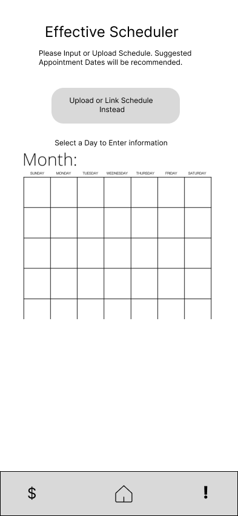
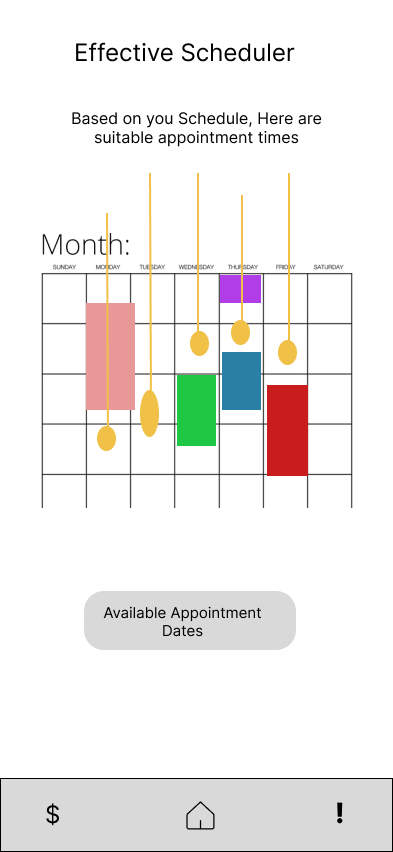
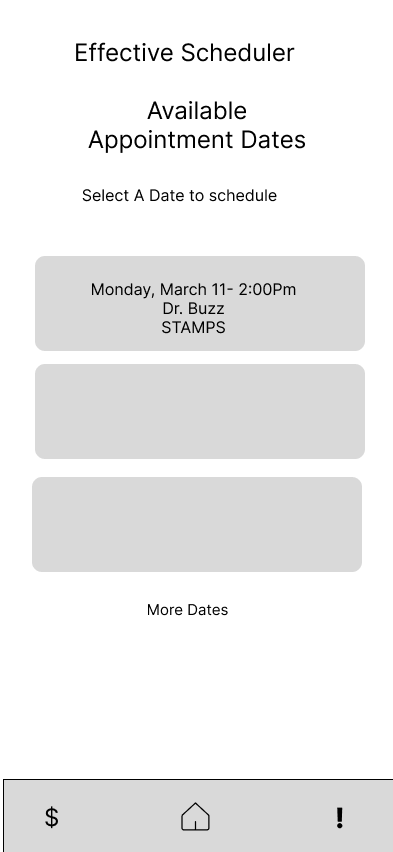
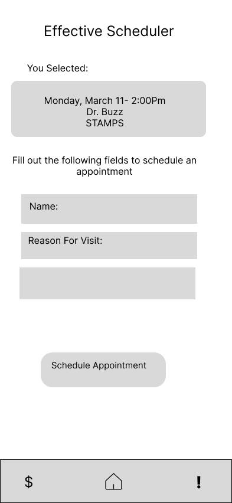
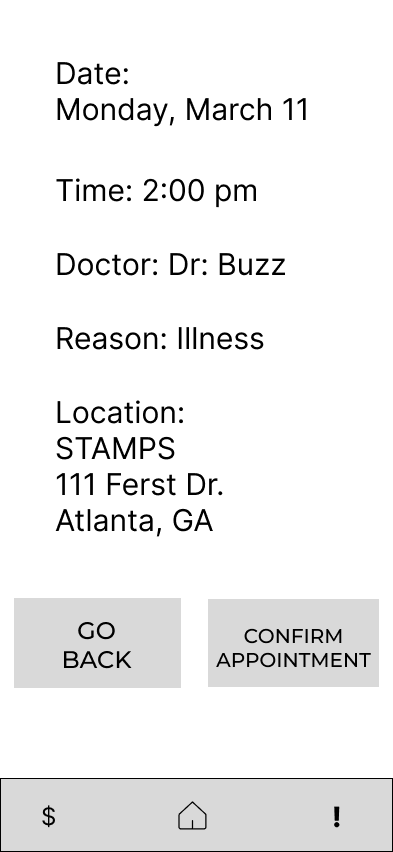
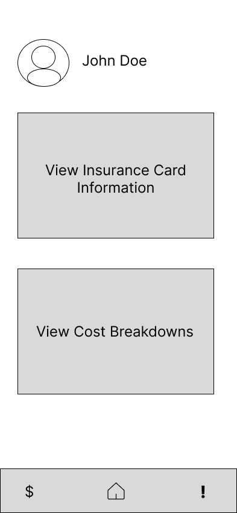
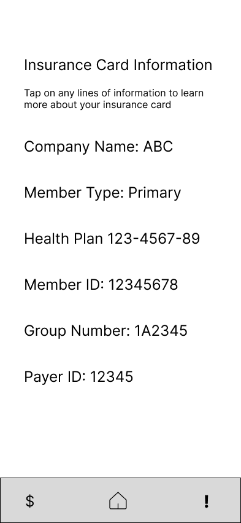
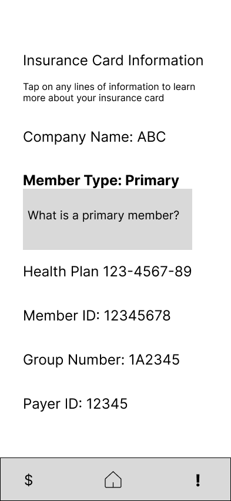
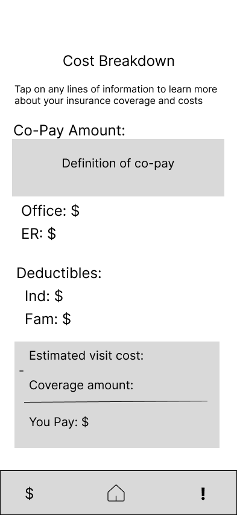
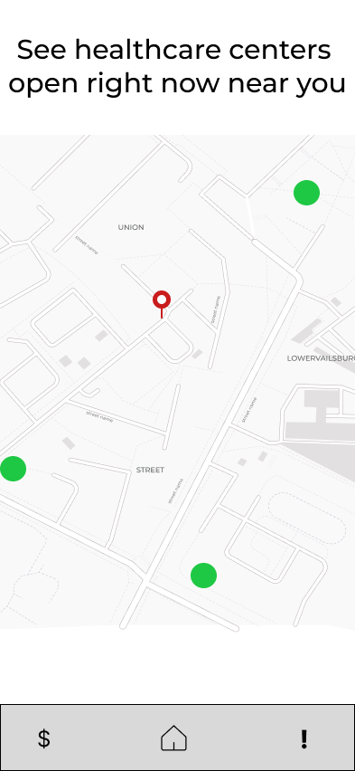
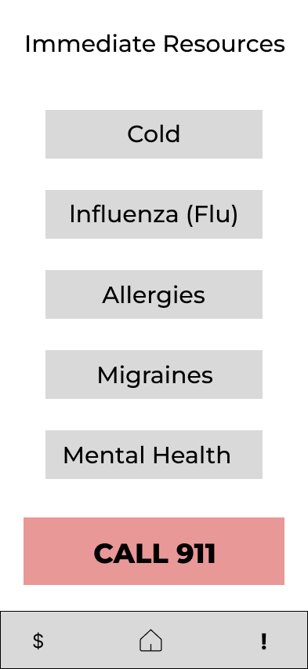
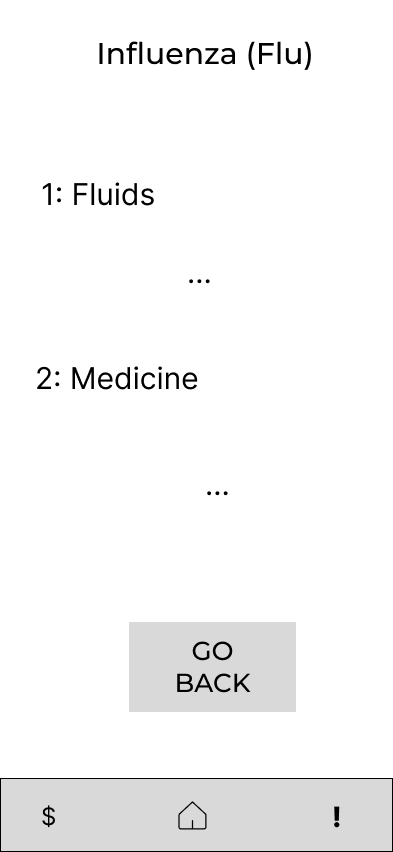
Using the low fidelity mockups, we got to work with designing screens that stuck with the goal of creating
screens that are detailed and compact while also adding a color scheme that reflects the school spirit of Georgia Tech. In this
iteration we also focused on adding more points of navigation such as pop-ups for inserting calendars along with confirmation points for date selections.
 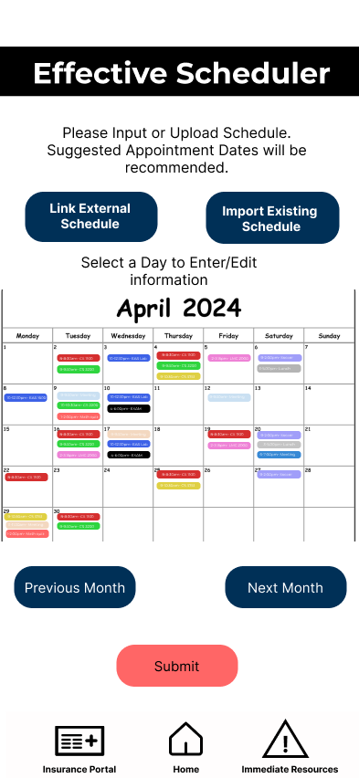
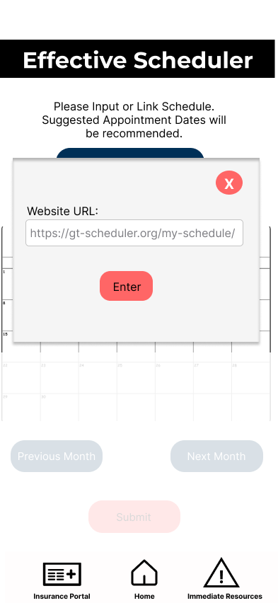
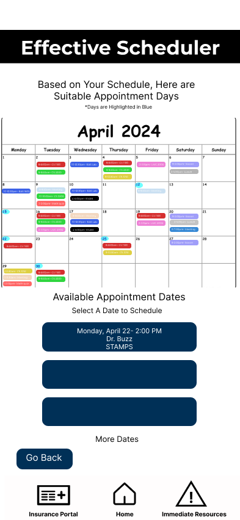
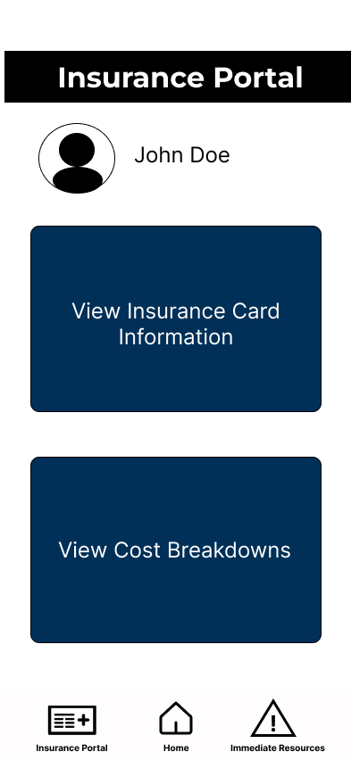
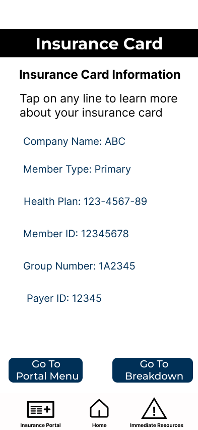
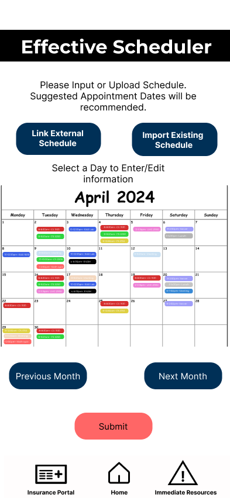
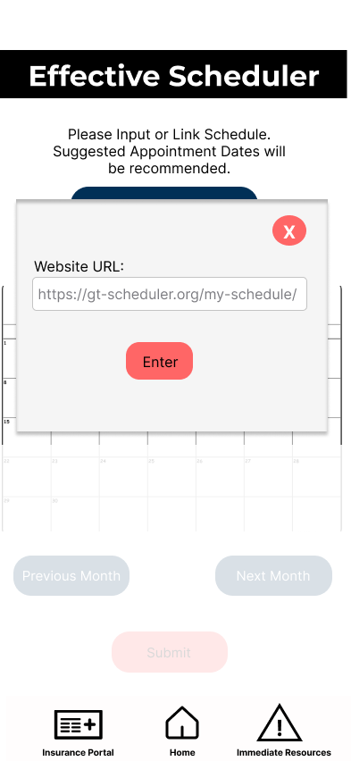
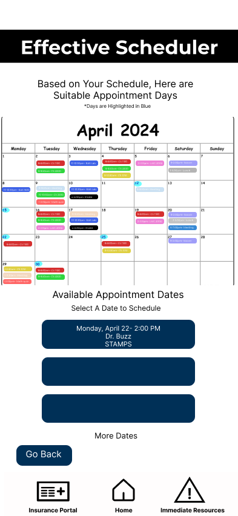
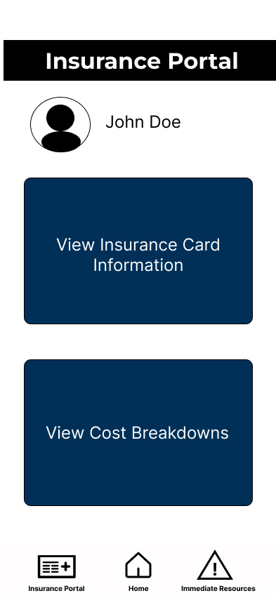
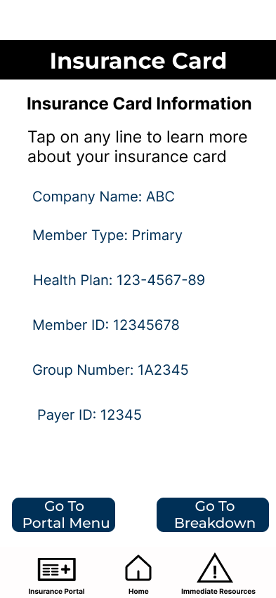
 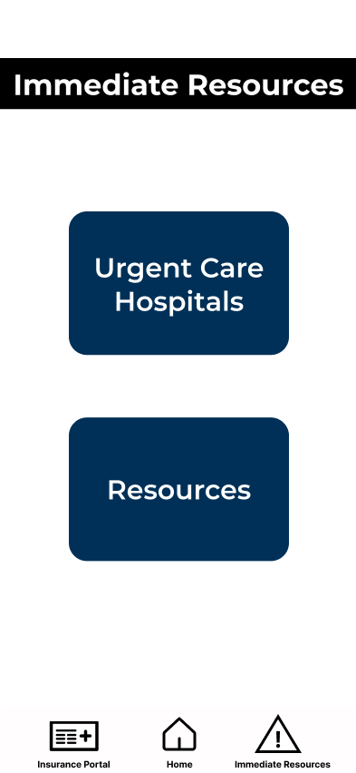
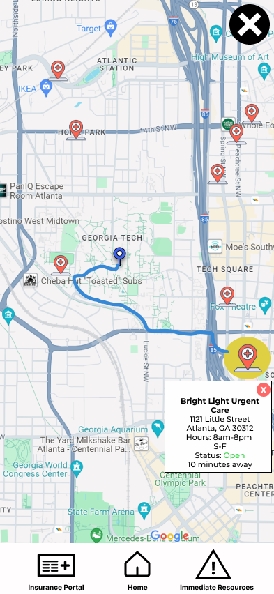
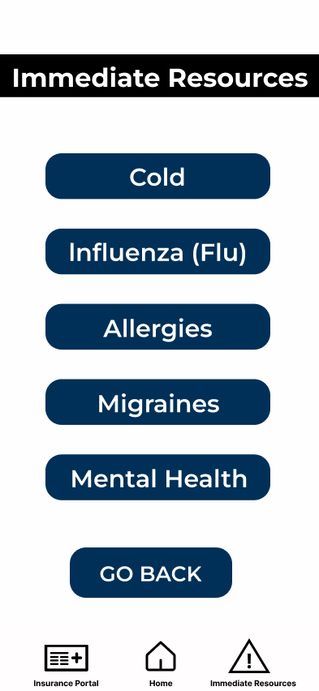
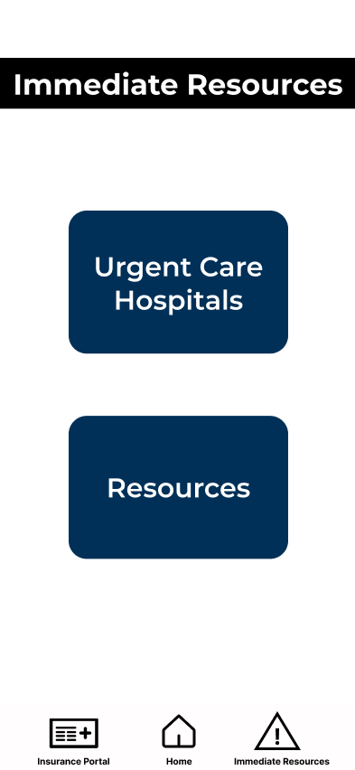
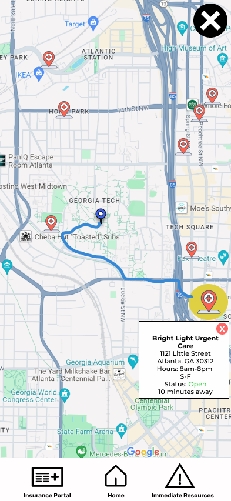
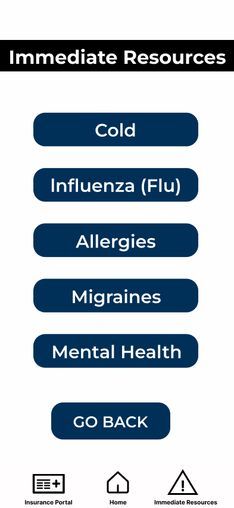
User Testing
- Evaluation Method:
- Think-aloud
- This method gave us great insight into our user’s thought processes.
- Number of Participants:
- 5 participants
- computer science majors, 1 business major, 1 mechanical engineer major
- 3 in-state and 2 out-of-state students
- Key Findings:
- The wording/directions on some screens are a little unclear, especially on the cost breakdown page.
- Users would like to have an option to submit their schedules when they first create an account and edit it anytime.
- The immediate resource and insurance portal taskbar icons are confusing for some users.
 Personal Projects
Resume
Personal Projects
Resume